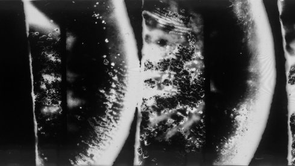
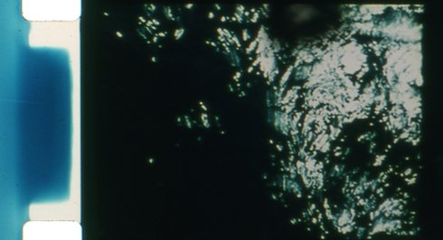
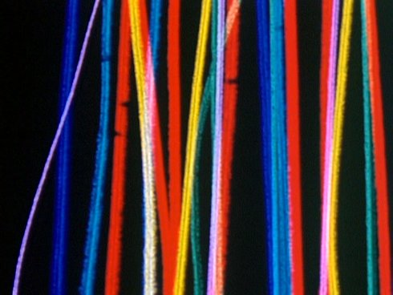

Labor of love
L'abominable (paris)
MONTAG | 12 oKt 20.00 | werkstattkino
 Radikal, also wörtlich: die Wurzel betreffend. Ein Film aus schwarzen Radieschen: diese in Streifen geschnitten und direkt auf das Filmmaterial ausgelegt. Anschließend belichtet. Eine Rückkehr zu den Wurzeln des Kinos im digitalen Zeitalter.
|
Further
Radical
|
Eine Explosion von Licht durchdringt die fotochemische Schwarz-Weiß-Emulsion der schwarzen Radieschen-Wurzeln.
|
The
Sound Drifts
|
Member of the famous Metamkine label, Jérôme Noetinger works with a tape recorder and generates a complex sound organism based on microphonic captures, electromagnetic parasites and radio hazards that interact in the film with stroboscopic effects. Cinema for the ears!
Martine Rousset

|
|
„Das Meer ist eine Sprache, deren Bedeutung wir verloren haben.” (Jorge Luis Borges)
Emmanuel Lefrant

|
All
Over
|
Ein Film ohne Kamera, der sich von Direktfilmen auch dadurch unterscheidet, dass er von keinem Werkzeug (auch nicht von der Hand) berührt wurde.
|
Overall
|
Der kreative Prozess hat sich umgekehrt, das primäre Material ist nun Ölfarbe, die mit Pollock-Tropftechnik auf den Filmstreifen aufgetragen wird, dann wurden alle Farben im Labor mit einem Kontaktdrucker umgekehrt.
|
|
Ein menschenleerer schwarzer Raum, den man auszufüllen versucht, bis zu dem Punkt, an dem man völlig in Farbe versinkt.
|
Parties
visible et invisible d'un ensemble sous tension
|
Eine Landschaft wird aufgenommen und gleichzeitig ein Filmstreifen an derselben Stelle vergraben, an der gedreht wurde: Die Emulsion, das Opfer der Erosion, ist einem biochemischen Abbau unterworfen.
|
Saraban
|
Arbeit in Geschwindigkeit, Rhythmen, Flicker und Farbe.
|
Still
Frames
|
Zwillingsfilm zu SARABAN. Ziel war nicht nur der Nachweis, dass dieselbe Bildquelle zwei verschiedene Filme erzeugen kann, sondern auch die Hervorhebung des Lichteinfalls auf Farbe.
|
Underground
|
Enthüllte „geheime Formen“ der Emulsion, Betonung der Materialität des Zelluloids und der Prozesse.